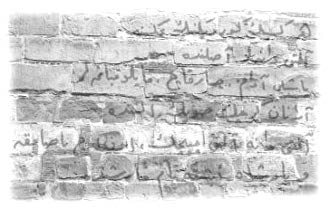

11 Ağustos 1928
— Kendimize bir isim koymalıyız, dedi Simin.
Zafer,
— Kendimize mi? Sen de mi ekiptensin?
Sanem,
— Tabii ya, ilk andan beri biz de işin içindeyiz. Hem biz olmasak...
— Evet, siz olmasanız?
Sessizlik oldu.
— Arap’ı ilk kim fark etti?
— O, beybabanın yardımcısı çıktı bir kere.
— Madem öyle, duvarda ne arıyordu?
— Oradan geçiyordur, sizin gürültünüzü duyup bahçede elli tane saksağan besliyorlar herhâlde diye meraktan bakmıştır.
Müzeyyen Babaanne kıkır kıkır gülüyordu Zafer’le ikizlerin atışmalarına. Nisan noktayı koydu:
— Evet, baştan beri bizimle beraberler, fikir üretiyorlar, çok cesurlar.
— Simin’in sinek, arı ve uçan her mahlukattan korkmasını bir kenara koyarsak doğru.
— Ben korkmuyorum, içim bir fena oluyor.
— Tamam, atışmayı bırakın, dedi Erim.
— İsmimiz ne olsun?
Simin,
— Samatya Afacanları.
Zafer,
— Yok artık, Malatya Damacanaları olsun bari!
Babaanne makaraları koyuverdi. “‘Cumhuriyet Canavarları’na ne dersiniz? Muhittin Dede bize hep öyle der ya...” diye önerdi Nisan.
— Bir kısım canavarın sivrisinekten tırsması normal mi sizce?
“Pufff” diye güldü Zafer. Simin, Zafer Ağabey’ini hafifçe çimdirdi.
— “Kara Korkaklar”a ne dersiniz? Düşünün, siyah atlı, siyah kıyafetli bir şövalye! Nasıl ürkütücü ama? Sinek, çekirge görünce kaçıyor, kara korkak, nınınınııım!
Nisan,
— “Kara Oklar Çetesi”ne ne dersiniz?
“Şahane!” dedi çocuklar.
— Valla ben de sevdim, dedi Zafer.
— Tamamdır, bir defter hazırlayıp kurallarımızı ve anılarımızı yazalım o zaman, dedi Nisan.
— Yeni harflerle yazın ama, dedi bir ses.
Hepsi döndü, her zamanki şahane takım elbisesi, briyantinli saçıyla Ahmet Tevfik Amcalarını gördüler. İkizler koşup sarıldı.
— Bu çiçekler sizin için Müzeyyen Anne.
— Oğlum, nereden çıkarırsın bu güzellikleri, nezaketi.
— Eh Anneciğim, Fransa’da güzel bir hanımın olduğu eve çiçeksiz girilmez.
— Kafana yersin çiçeği, Tevfik oğlum!
Hepsi kahkahalarla güldü.
— Gürültüsüz patırtısız nasıl gelebildin Ahmet Tevfik Amca, yoksa velosipet işini bıraktın mı?
— Olur mu a canım, velosipet benim hobim. Hem modernlik simgesi. Yalnız mahallenin küçükleri yıldırdı beni, arka yoldan gelip Muhittin Bey’e bıraktım velosipetimi. Şimdi siz onu bırakın, 9 Ağustos günü gelemediniz. Sarayburnu’nda Gazi Mustafa Kemal çok güzel bir konuşma yaptı. Arap harfleri yerine Latin harflerinin kullanılacağını anlattı. Bir tahtaya harfleri çizdi. İlk dersi orada verdi. Yarından tezi yok ben öğreneceğim. Yalnız kendisini göreceğim diye yanlış tarafta durmuşum; basının çektiği fotoğraflarda çıkamadım, karşıda dursam tahtanın yanında, şimdi bütün ülke bu yakışıklıyı yakından görmüş olacaktı. Şanssızlık mirim.
Hepsi gülüştü.
— Yalnız Türkiye Cumhuriyeti topraklarında benim kadar şık giyinen tek kişi, Gazi Paşa. Dün onu müşahede[14] ettim mirim.
— Emin ol, senin kadar özen göstermiyordur kıyafetlerine, dedi Müzeyyen Babaanne.
— Hadi çocuklar, ben gidiyorum; arkadaşlarla Galatasaray İdadisi’nin karşısındaki Avrupa Pasajı’nda buluşup bir velosipet cemiyeti kuracağız.
— Görüşürüz Ahmet Tevfik Amca.
— Bay bay çocuklar.
Erim, farkına varmadan bahçeyi çeviren duvarlara şöyle bir baktı ve zarfı heyecanla açtı: “Canım oğlum; –86. sayfa– takip edilme, kimseye anlatma, sadece dostlarına güven” yazıyordu.
Gizemli el yazması kitabın 86. sayfasını açtılar. Yıkılmış bir kilise ya da onun gibi bir harabe görünüyordu. Harabenin birkaç duvarı ayakta kalmıştı. Arkasında yarı yıkılmış bir minare vardı. Kitaptaki tüm resimler siyah beyazken sadece bu resimdeki minare yeşile boyanmıştı. Arkada bir dağ vardı ve dağ sanki bir keşişe benziyordu. Yıkıntıların arasında yaşlı, yuvarlak gözlüklü, keçi sakallı adam; resmin içinden onlara bakıyor ve sağ eliyle minareyi işaret ediyordu.
— Sağlam duvarda yazılar var belli belirsiz, dedi Erim.
— Büyütecin yerini ben biliyorum, diyerek Simin ve Sanem’in yardımıyla ayağa kalktı Zafer.
Üçü beraber eve doğru ağır aksak gittiler, üç dakika sonra ellerinde bir büyüteçle geri döndüler. Duvara büyüteçle baktılar ve bir kitabe gördüler:

Herkesin gördüğünün aksine
Altı taneler aslında…
Yaşlı adam, sarkaç, kaplumbağalar
Aranan gerçek suyun altında
Altı tane altı çiçek, on üç basamak
Ve padişah işte tam karşında.
— Bir şey anladıysam Arap olayım, dedi Sanem.
Kıkırdadılar. Onlarca fikir ürettiler; hiçbiri, hiçbirine mantıklı gelmedi. Bu sefer hiç neşeleri kalmadı. Kara Oklar Çetesi üyeleri –sanırım buna Müzeyyen Babaanne de dâhildi– bu akşam daha erken yattılar. Hiçbirini uyku tutmadı. Düşün, düşün…
Gecenin yarısında Nisan yatağında doğruldu, “Tabii ya!” dedi, “Tabii ya!” Gaz lambasını yaktı ve koşarak odadan çıktı. Erim’le Zafer’in kapısını çaldı. Çocuklar, “Gel” diye seslendiler. İçeri girdi Nisan,
— Ben çözdüm galiba çocuklar, detayını sabah anlatırım. Yarın sabah erkenden bizim eve gidiyoruz, ipucu orada. Sadece şunu söyleyeyim, Dedem Osman Hamdi Bey bizi çağırıyor.
Zafer ve Erim’in tüyleri diken diken olmuştu.
Zafer,
— Sakın cennete çağırıyor olmasın?
Yorganın altından inceden bir “pııırt” sesi duyuldu.